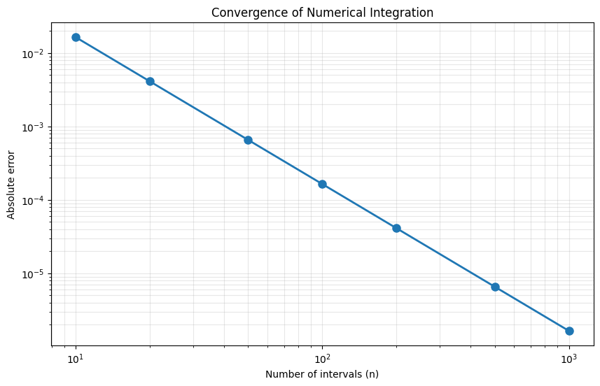

Numerical Integration: A Practical Guide with Python
numerical analysis
mathematics
python
Author
Vikreth
Published
October 29, 2025
Integration is one of the fundamental operations in calculus, but many real-world functions are either too complex to integrate analytically or don’t have a closed-form solution at all. This is where numerical integration comes to the rescue.
Why Numerical Integration?
While symbolic integration gives us exact answers, it’s often impossible or impractical for functions like:
Functions with no elementary antiderivative (e.g., \(e^{-x^2}\))
Data points from experiments or measurements
Complex multi-variable functions
Functions defined algorithmically
Numerical integration approximates definite integrals by calculating the area under a curve using computational methods.
The Fundamental Concept
All numerical integration methods approximate the area under a curve by dividing it into smaller, manageable pieces. Think of it like calculating the area of an irregular shape by covering it with small rectangles or trapezoids.
Method 1: The Riemann Sum
The simplest approach is the Riemann sum, which approximates the area using rectangles.
{: width=“50%”}
\[
\int_a^b f(x) dx \approx \sum_{i=1}^{n} f(x_i) \Delta x
\]
Where \(\Delta x = \frac{b-a}{n}\), and \(f(x_i)\) is the height at a specific point within the interval.
import numpy as npimport matplotlib.pyplot as pltdef riemann_sum(f, a, b, n, method='midpoint'):""" Calculate Riemann sum for function f from a to b using n intervals. Parameters: - f: function to integrate - a, b: integration bounds - n: number of rectangles - method: 'left', 'right', or 'midpoint' """ dx = (b - a) / n x = np.linspace(a, b, n +1)if method =='left': sample_points = x[:-1]elif method =='right': sample_points = x[1:]else: # midpoint sample_points = (x[:-1] + x[1:]) /2return dx * np.sum(f(sample_points))# Example: integrate x^2 from 0 to 1f =lambda x: x**2result = riemann_sum(f, 0, 1, 100)print(f"Riemann sum approximation: {result:.6f}")print(f"Exact value: {1/3:.6f}")
Riemann sum approximation: 0.333325
Exact value: 0.333333
Method 2: The Trapezoidal Rule
Instead of rectangles, the trapezoidal rule uses trapezoids, which better approximate curved functions. \[
\int_{a}^{b} f(x)\,dx \approx \frac{h}{2}\left(f(x_0) + 2\sum_{i=1}^{n-1} f(x_i) + f(x_n)\right)
\]
Where \(h = \frac{b-a}{n}\) and \(x_i = a + ih\) for \(i = 0, 1, ..., n\).
def trapezoidal_rule(f, a, b, n):""" Integrate function f from a to b using trapezoidal rule with n intervals. """ x = np.linspace(a, b, n +1) y = f(x) h = (b - a) / n# Apply trapezoidal rule integral = h * (0.5* y[0] + np.sum(y[1:-1]) +0.5* y[-1])return integral# Example: integrate sin(x) from 0 to πf =lambda x: np.sin(x)result = trapezoidal_rule(f, 0, np.pi, 100)print(f"Trapezoidal rule: {result:.6f}")print(f"Exact value: {2:.6f}")
def simpsons_rule(f, a, b, n):""" Integrate function f from a to b using Simpson's rule. Note: n must be even. """if n %2!=0:raiseValueError("n must be even for Simpson's rule") x = np.linspace(a, b, n +1) y = f(x) h = (b - a) / n# Simpson's rule: (h/3)[y0 + 4y1 + 2y2 + 4y3 + ... + 4yn-1 + yn] integral = h /3* (y[0] + y[-1] +4* np.sum(y[1:-1:2]) +2* np.sum(y[2:-1:2]))return integral# Example: integrate e^(-x^2) from 0 to 1f =lambda x: np.exp(-x**2)result = simpsons_rule(f, 0, 1, 100)print(f"Simpson's rule: {result:.6f}")
Simpson's rule: 0.746824
Comparing Methods
def compare_methods(f, a, b, exact_value, n_values):""" Compare numerical integration methods. """print(f"{'n':<10}{'Riemann':<15}{'Trapezoidal':<15}{'Simpson':<15}")print("-"*60)for n in n_values: riemann = riemann_sum(f, a, b, n) trap = trapezoidal_rule(f, a, b, n) simp = simpsons_rule(f, a, b, n if n %2==0else n +1)print(f"{n:<10}{riemann:<15.8f}{trap:<15.8f}{simp:<15.8f}")print(f"{'Exact:':<10}{exact_value:.8f}")# Test with f(x) = x^2 from 0 to 1f =lambda x: x**2compare_methods(f, 0, 1, 1/3, [10, 50, 100, 500])
Let’s solve a physics problem where a varying force is applied:
# A spring with varying spring constantdef force(x):"""Force in Newtons as a function of displacement in meters"""return50* x +10* x**2# Work done compressing spring from 0 to 0.5 meterswork, error = integrate.quad(force, 0, 0.5)print(f"Work done: {work:.2f} Joules")# Visualizex = np.linspace(0, 0.5, 100)plt.figure(figsize=(10, 6))plt.plot(x, force(x), 'b-', linewidth=2, label='Force')plt.fill_between(x, force(x), alpha=0.3)plt.xlabel('Displacement (m)')plt.ylabel('Force (N)')plt.title('Work = Area Under Force Curve')plt.grid(True)plt.legend()plt.show()
Work done: 6.67 Joules
Error Analysis and Convergence
Understanding error is crucial in numerical methods:
def analyze_convergence(f, a, b, exact, method_func):""" Analyze how error decreases as n increases. """ n_values = [10, 20, 50, 100, 200, 500, 1000] errors = []for n in n_values: approx = method_func(f, a, b, n) error =abs(approx - exact) errors.append(error) plt.figure(figsize=(10, 6)) plt.loglog(n_values, errors, 'o-', linewidth=2, markersize=8) plt.xlabel('Number of intervals (n)') plt.ylabel('Absolute error') plt.title('Convergence of Numerical Integration') plt.grid(True, which="both", alpha=0.3) plt.show()# Test convergencef =lambda x: np.sin(x)analyze_convergence(f, 0, np.pi, 2, trapezoidal_rule)

Best Practices
Choose the right method: Simpson’s rule is usually more accurate than trapezoidal for smooth functions
Start with fewer intervals: Test with small n, then increase until results stabilize
Check for convergence: Verify that increasing n doesn’t significantly change the result
Use adaptive methods: SciPy’s quad automatically adjusts the step size for optimal accuracy
Handle singularities carefully: Be cautious with functions that have discontinuities or infinite values
Conclusion
Numerical integration is a powerful tool that bridges the gap between theory and practice. While the basic methods (Riemann sums, trapezoidal rule, Simpson’s rule) are great for understanding the concepts, modern libraries like SciPy provide robust, efficient implementations for real-world problems. The key takeaway is that numerical integration transforms an impossible analytical problem into a tractable computational one, making it indispensable in science, engineering, and data analysis. Further Reading
Explore adaptive quadrature methods
Learn about Monte Carlo integration for high-dimensional integrals
Study Gaussian quadrature for maximum efficiency
Investigate numerical methods for improper integrals
 {: width=“50%”}
{: width=“50%”}